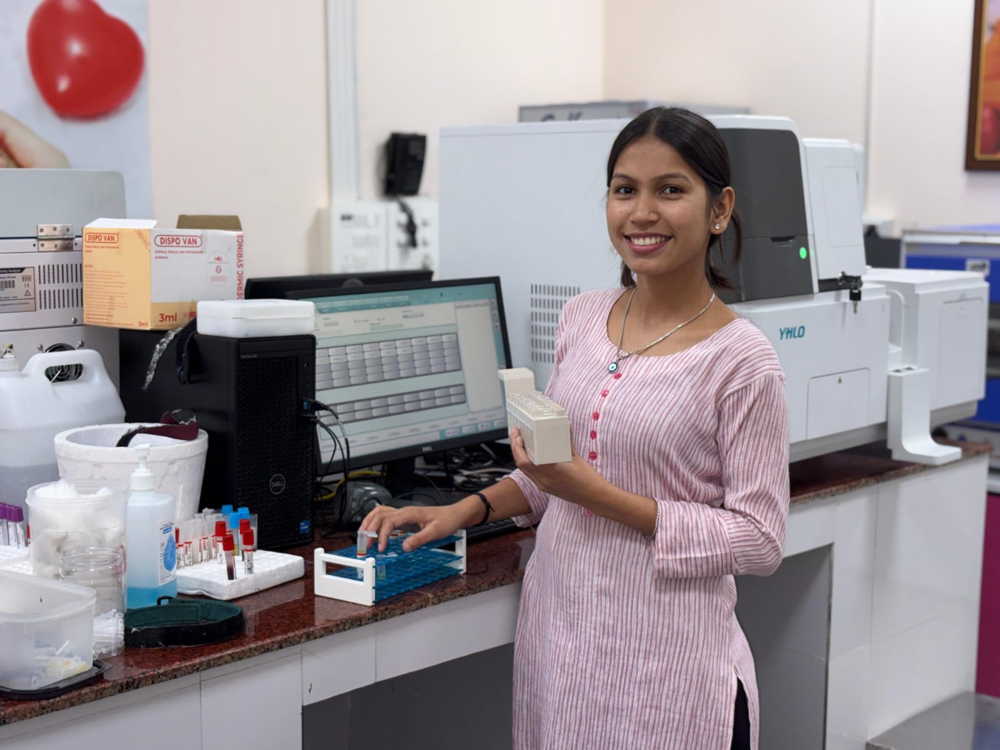

I believe that exceptional healthcare begins with truly listening to patients. Each person has a unique story, and understanding that story is essential to providing effective treatment.
My practice focuses on preventive care, chronic disease management, and helping patients achieve optimal health through evidence-based medicine combined with a holistic perspective.
Outside of medicine, I'm passionate about medical education, community health initiatives, and staying active through hiking and yoga—practices I often recommend to my patients.